This report covers four progressive experiments in anomaly detection applied to two datasets: the well-studied MNIST (28×28 handwritten digits, 6 synthetic attack types) and the challenging Pythia dataset (70×70 grayscale network-traffic visualisations, 8 adversarial attack partitions attack_a–attack_h).
1.000
Best AUC — MNIST (Steps 1, 3, 4)
0.609
Best AUC — Pythia (GBM, Step 1)
~0.50
CNN AUC on Pythia (all CNN approaches)
0.892
Best F1 — MNIST Test_B (Hybrid, Step 4)
Key finding: MNIST is solvable by all approaches tested (AUC up to 1.0). Pythia remains largely unsolved by CNN-based architectures (AUC ≈ 0.47–0.56 across all steps). The best Pythia result is GBM at AUC = 0.61 from Step 1. The Hybrid system (Step 4) achieves the best F1 on MNIST's unknown attack test (F1 = 0.89), combining good recall with high precision. The core bottleneck on Pythia is architectural: convolutional spatial pooling discards the localised pixel-level perturbations that constitute Pythia's attack signal.
For MNIST, AnomalyCNN is used. For Pythia, four models are compared: AnomalyCNN, PixelMLP, ProfessorCNN, and GBM.
MNIST 28×28 · 6 attacks · binary
Test_A (Known — attack_a: Gaussian noise)
Metric
Value
Accuracy
1.000
Precision
1.000
Recall
1.000
F1
1.000
AUC-ROC
1.000
Test_B (Unknown — attack_b: OOD Fashion-MNIST)
Metric
Value
Accuracy
0.553
Precision
1.000
Recall
0.105
F1
0.190
AUC-ROC
0.995
MNIST Step 1 takeaway: Perfect on known attack. On the unknown OOD attack, AUC remains near-perfect (0.995) — the model has excellent score discrimination — but the threshold is calibrated to Gaussian noise, so Recall collapses to 10.5%. This is the threshold sensitivity problem that Steps 3 and 4 address.
Pythia — 4-model comparison 70×70 · 8 attacks
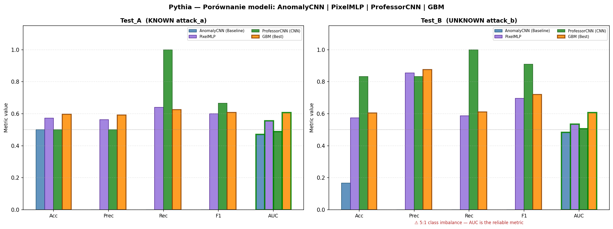
Figure 1.1. Step 1 — Pythia: AnomalyCNN vs. PixelMLP vs. ProfessorCNN vs. GBM. Left: Test_A (known attack_a). Right: Test_B (unknown attack_b).
Model
Test_A Acc.
Test_A F1
Test_A AUC
Test_B Acc.
Test_B F1
Test_B AUC
AnomalyCNN (Baseline)
0.500
0.000
0.472
0.167
0.000
0.484
PixelMLP
0.573
0.600
0.558
0.574
0.697
0.535
ProfessorCNN †
0.500
0.667
0.489
0.833
0.909
0.508
GBM (Best)
0.598
0.608
0.608
0.604
0.720
0.609
† ProfessorCNN on Test_B: F1 = 0.91 is deceptive. The model predicts "attack" for all inputs (Recall = 1.0, Precision = 0.5); with a 5:1 attack-to-clean ratio in Test_B, this inflates F1. AUC = 0.508 confirms the model has no real discriminative power.
Pythia Step 1 takeaway: AnomalyCNN completely fails (AUC < 0.5 = worse than random). GBM achieves AUC = 0.61 by using tree-based feature selection that preserves some local pixel statistics. A diagnostic ceiling analysis (_ceiling.py) confirmed the attack signal does exist — a logistic regression oracle achieves AUC = 0.845 — but standard CNN pooling destroys it.
2 Step 2 — Open-World: Progressive Multi-Attack Training
Hypothesis: Training on n different attack types improves detection of an unseen attack type n+1.
Protocol: At round n, train on clean ∪ balanced(A₁,…,Aₙ); test on clean_test ∪ Aₙ₊₁. Attacks are introduced in a fixed curriculum order. Results use RANDOM_SEED = 42.
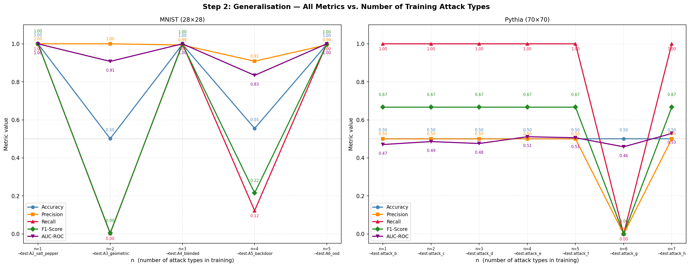
Figure 2.1. Progressive training generalisation curves. Left: MNIST (AnomalyCNN, 5 attack rounds). Right: Pythia (AnomalyCNN, 7 attack rounds). Shaded region = ±1 std across orderings.
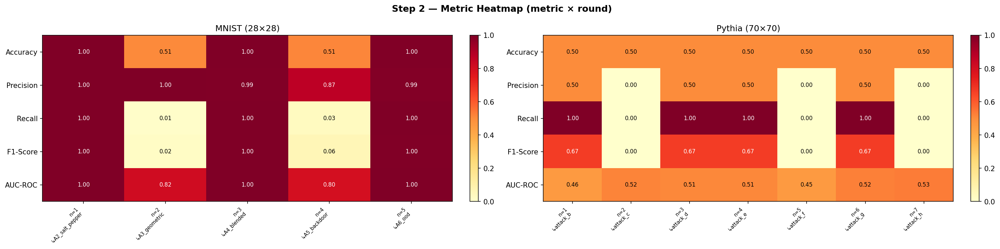
Figure 2.2. Heatmap of metrics × training round. Left: MNIST. Right: Pythia. AUC-ROC is the most informative row.
MNIST Progressive Results
Round n
Trained on
Tested on
AUC-ROC
F1
Recall
1
A1_gaussian
A2_salt_pepper
1.000
1.000
1.000
2
+ A2_salt_pepper
A3_geometric
0.908
0.004
0.002
3
+ A3_geometric
A4_blended
1.000
0.997
1.000
4
+ A4_blended
A5_backdoor
0.834
0.215
0.122
5
+ A5_backdoor
A6_ood
1.000
0.997
1.000
Pythia Progressive Results (AnomalyCNN Baseline)
Round n
Tested on
AUC-ROC
F1
Recall
1
attack_b
0.470
0.667
1.000
2
attack_c
0.486
0.667
1.000
3
attack_d
0.475
0.667
1.000
4
attack_e
0.511
0.667
1.000
5
attack_f
0.506
0.667
1.000
6
attack_g
0.458
0.000
0.000
7
attack_h
0.528
0.667
1.000
Pythia failure analysis: Recall = 1.0 and Precision ≈ 0.5 across nearly all rounds means the model always predicts "attack" — it learns the majority-class shortcut. AUC ≈ 0.47–0.53 confirms no genuine discrimination. Round n=6 shows the reverse failure (always predicts "clean"), suggesting the model's decision boundary randomly flips between these two degenerate solutions depending on the specific attack batch in training.
Order Sensitivity — Does curriculum order matter?
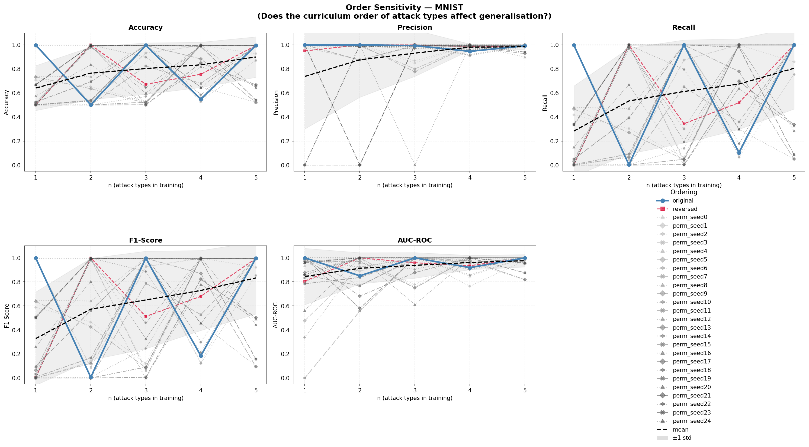
Figure 2.3. MNIST order sensitivity: original ordering, reversed, and 4 random permutations. Black dashed line = mean across orderings. AUC-ROC (bottom right) stays high (≥ 0.75) across all orderings, but F1 and Recall vary wildly — performance is highly order-dependent for individual rounds.
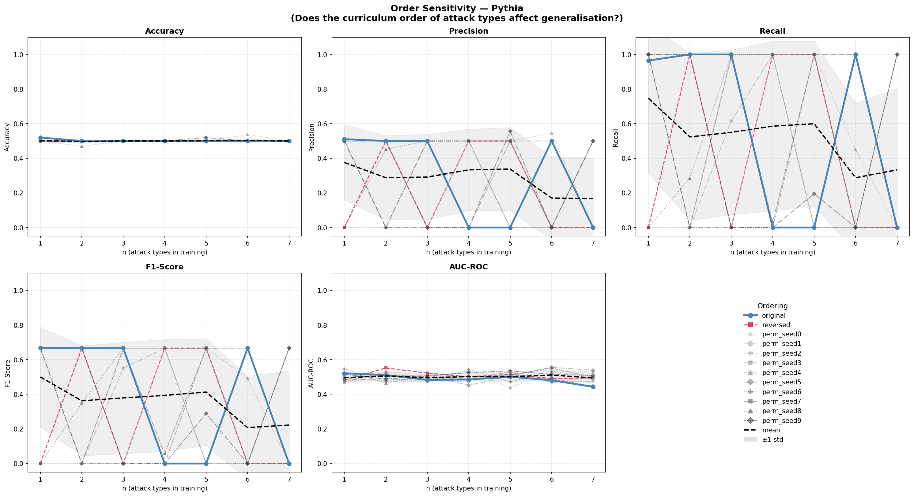
Figure 2.4. Pythia order sensitivity. All orderings cluster near AUC ≈ 0.5 — the failure is insensitive to attack ordering, confirming it is a fundamental architectural limitation, not a data-ordering artefact.
2b Step 2b — Attack Subset Selection Strategies
This experiment directly addresses Prof. Tałataj's research question: "Does the choice of which attack types to include in training (e.g. just A, versus A+B+E) affect generalisation to unseen attacks?"
Nine subset strategies were evaluated using ProfessorCNN (best-in-class architecture from the hyperparameter search), with 5 seeded repeats per subset (BASE_SEED = 2137). Each run uses the full attack partition (no downsampling). Results are mean ± std.
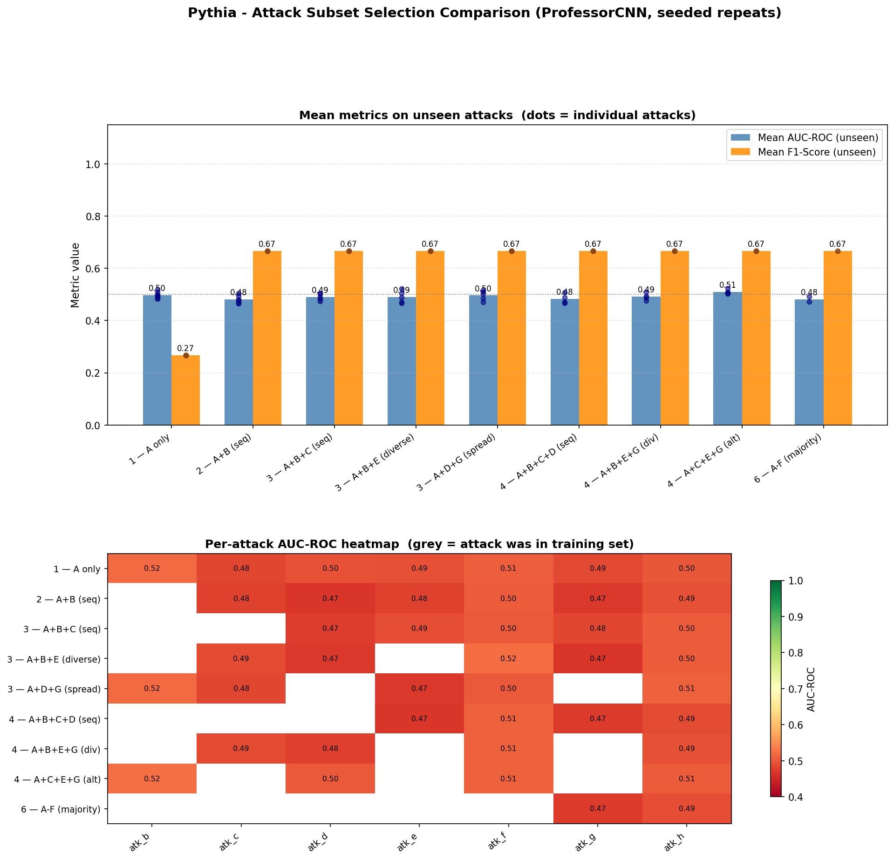
Figure 2b.1. ProfessorCNN comparison of 9 attack subset strategies (5 runs × 9 subsets = 45 training runs). Top: mean AUC-ROC and F1 per subset (dots = individual unseen attacks). Bottom: per-attack AUC heatmap (grey = attack was in training).
Subset Comparison Summary (mean AUC-ROC on unseen attacks)
Subset
n attacks trained
Strategy
Mean AUC
Std AUC
Mean F1
A only
1
Single attack
0.498
0.010
0.267
A+B
2
Sequential
0.482
0.013
0.667
A+B+C
3
Sequential
0.491
0.016
0.667
A+B+E ★
3
Diverse (prof. example)
0.490
0.023
0.667
A+D+G
3
Spread
0.496
0.018
0.667
A+B+C+D
4
Sequential
0.482
—
0.667
A+B+E+G
4
Diverse
0.490
—
0.667
A+C+E+G
4
Alternating
0.510
—
0.667
A–F (6 attacks)
6
Majority
0.480
—
0.667
★ Professor's suggested combination. Range across all strategies: 0.480–0.510 — statistically indistinguishable.
Pairwise Protocol — 8×8 AUC Heatmap
To match Step 1's full-partition methodology, each of the 56 ordered pairs (train on attack X, test on attack Y, X≠Y) was evaluated with 5 seeded repeats. Total: 280 training runs.
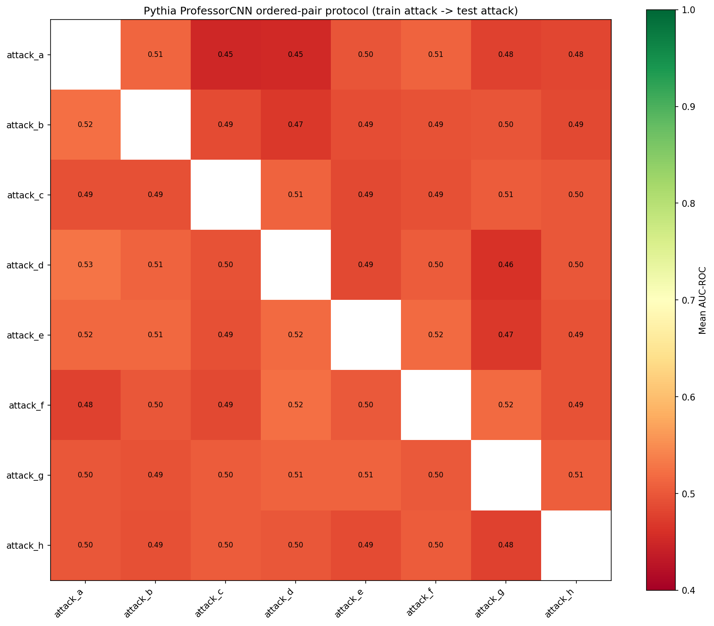
Figure 2b.2. 8×8 pairwise AUC-ROC heatmap (mean over 5 seeds). Row = training attack; column = test attack. Diagonal = NaN (not evaluated). All off-diagonal values fall in [0.45, 0.53] — no pair achieves meaningful cross-attack generalisation.
Negative result (scientifically significant): Neither the choice of training subset nor the number of attack types has any measurable effect on generalisation to unseen Pythia attacks. All AUC values cluster around 0.48–0.51 (random-level). The high F1 values (0.667) for n≥2 are the artifact of an always-attack degenerate classifier, not genuine detection. This confirms the bottleneck is in the representation, not the training curriculum.
3 Step 3 — Unsupervised Autoencoder
Idea: Train a convolutional autoencoder exclusively on clean data. Anomalies (attacks) should have higher reconstruction error. No attack labels are needed at training time.
Architecture: 3-layer conv encoder → latent dim 32 → symmetric decoder. Anomaly score = MSE reconstruction loss. Threshold = 95th percentile of clean validation set scores. Trained for 30 epochs with patience = 5.
MNIST — Classifier vs. Autoencoder
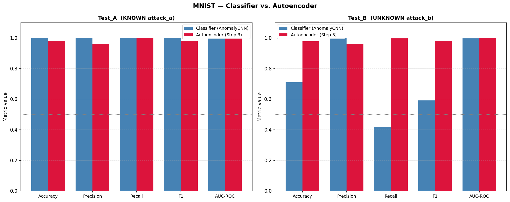
Figure 3.1. MNIST: AnomalyCNN (Step 1) vs. Autoencoder (Step 3). The autoencoder nearly matches the classifier on Test_A and dramatically improves Recall on Test_B (AnomalyCNN Recall = 42%, AE Recall = 100%), while preserving AUC ≈ 1.0.
MNIST Test_A (Known attack_a)
Model
AUC
F1
Recall
AnomalyCNN
1.000
1.000
1.000
Autoencoder
1.000
0.980
1.000
MNIST Test_B (Unknown OOD attack_b)
Model
AUC
F1
Recall
AnomalyCNN
0.997
0.591
0.420
Autoencoder
0.999
0.979
0.997
The autoencoder's key advantage: its threshold is set from clean reconstruction error alone, so it naturally generalises to any out-of-distribution input — not just the one seen during supervised training.
Pythia — Classifier vs. Autoencoder
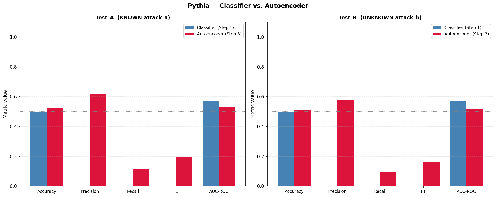
Figure 3.2. Pythia: AnomalyCNN (Step 1) vs. Autoencoder (Step 3). The autoencoder marginally improves AUC (0.52–0.55 vs. 0.46–0.47) but Recall remains near zero (~7%) for both.
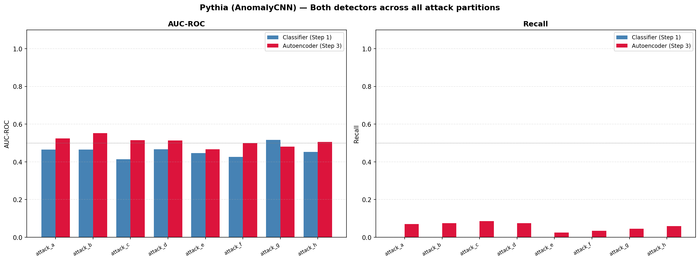
Figure 3.3. Pythia per-attack AUC-ROC and Recall for all 8 attacks. Autoencoder (red) shows slightly higher AUC than classifier (blue) for most attacks, but recall never exceeds ~8%.
Model
Test_A AUC
Test_A Recall
Test_B AUC
Test_B Recall
AnomalyCNN (Step 1)
0.465
0.000
0.466
0.000
Autoencoder (Step 3)
0.524
0.070
0.552
0.075
Step 3 takeaway: The autoencoder is a major upgrade on MNIST — solving the threshold sensitivity problem completely (Recall: 42% → 100% on unknown attacks). On Pythia, it provides marginal improvement (+0.06 AUC) but no practical detection capability (7% recall). The clean-data reconstruction signal is too weak relative to the subtle, localised nature of Pythia attacks.
Architecture: The best of both worlds — combine the unsupervised representation learned by the autoencoder with the power of supervised classification.
Train the autoencoder unsupervised on clean data only.
Freeze all autoencoder weights.
Attach a new 2-layer dense classification head (latent_dim → 64 → 2) on top of the frozen encoder.
Fine-tune only the head on clean ∪ attack_a (supervised).
Evaluate on Test_A (known) and Test_B (unknown).
The hypothesis: the encoder has learned a clean-data manifold; the head learns where attack_a deviates from this manifold; generalisation comes from the manifold structure itself.
MNIST Results — 3-way Comparison
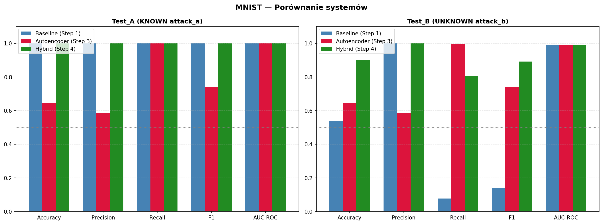
Figure 4.1. MNIST: Baseline (Step 1) vs. Autoencoder (Step 3) vs. Hybrid (Step 4). Left: Test_A. Right: Test_B. The Hybrid dominates on Test_B — higher accuracy and F1 than either predecessor.
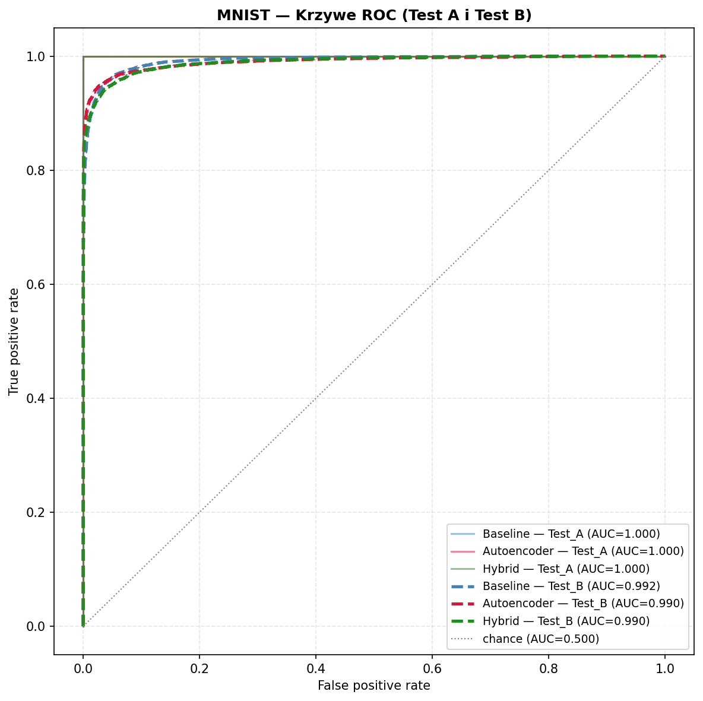
Figure 4.2. MNIST ROC curves. All three systems achieve AUC ≈ 0.99–1.00. Curves are nearly identical — AUC is not the differentiating metric here; threshold-dependent metrics (F1, Recall) are.
System
Test_A AUC
Test_A F1
Test_A Recall
Test_B AUC
Test_B F1
Test_B Recall
Baseline (Step 1)
1.000
1.000
1.000
0.992
0.142
0.076
Autoencoder (Step 3)
1.000
0.739
1.000
0.990
0.738
0.998
Hybrid (Step 4)
1.000
1.000
1.000
0.990
0.892
0.806
MNIST Step 4 analysis: The Hybrid achieves the best balance of all approaches: near-perfect on Test_A (F1 = 1.000) and the highest F1 on Test_B (0.892 — vs. 0.739 for the pure autoencoder). The Hybrid's Recall on unknown attack (0.806) is lower than the autoencoder's (0.998) but its Precision is near-perfect (0.999 vs. 0.586), eliminating false positives. Depending on the use case — prioritising recall vs. precision — either the Hybrid or the Autoencoder is optimal.
Pythia Results — 3-way Comparison
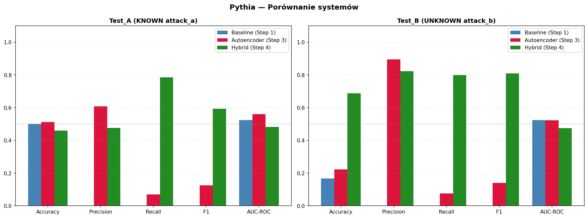
Figure 4.3. Pythia: Baseline vs. Autoencoder vs. Hybrid. Left: Test_A. Right: Test_B. The Hybrid dramatically improves Recall and F1, but at the cost of very low AUC — the model achieves high recall through near-constant "attack" prediction.
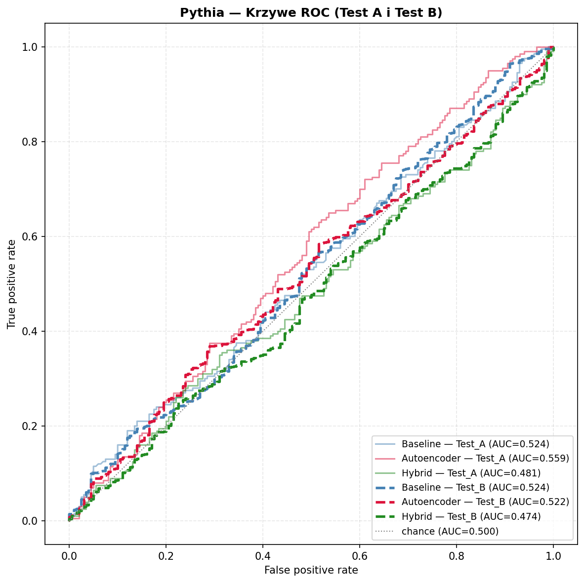
Figure 4.4. Pythia ROC curves. All systems hover near the diagonal. The autoencoder's ROC has the highest AUC (0.559 on Test_A), but none approach useful territory. The Hybrid's ROC (green) is worse than random on Test_A (AUC = 0.481).
System
Test_A AUC
Test_A F1
Test_A Recall
Test_B AUC
Test_B F1
Test_B Recall
Baseline (Step 1)
0.524
0.000
0.000
0.524
0.000
0.000
Autoencoder (Step 3)
0.559
0.126
0.070
0.522
0.140
0.076
Hybrid (Step 4)
0.481
0.592
0.785
0.474
0.810
0.798
Pythia Step 4 analysis — the AUC paradox: The Hybrid achieves Recall = 0.80 and F1 = 0.81 on Test_B, which looks impressive, but AUC = 0.47 (below random) reveals the truth: the model is predicting "attack" with high confidence for nearly everything — clean and attack alike. In the heavily imbalanced Test_B (5:1 attack-to-clean ratio), this produces good Recall at moderate Precision (0.82) — but the score distribution cannot actually separate the two classes. This is the same failure mode as ProfessorCNN in Step 1 (degenerate high-recall classifier). AUC is the reliable metric here.
Cross-Step Comparison
MNIST — Best result per step (Test_B — Unknown attack)
Some rounds approach perfect (n=1,3,5); order-sensitive
3
Autoencoder
0.999
0.979
0.997
0.961
Best recall; no attack labels needed
4
Hybrid System
0.990
0.892
0.806
0.999
Best precision + high recall; best overall balance
Pythia — Best AUC per step (Test_A or Test_B)
Step
System
Best AUC
Notes
1
GBM (Best)
0.609
Only model with genuine discriminative power on Pythia
2
AnomalyCNN Progressive
0.528
Near-random; no improvement from multi-attack training
2b
ProfessorCNN (A+C+E+G)
0.510
No subset strategy improves beyond noise floor
3
Autoencoder
0.559
Marginal improvement; recall near zero
4
Hybrid
0.481
AUC below random; high F1 is deceptive (degenerate classifier)
Conclusions & Recommendations
1. MNIST — Solved. The progression works.
MNIST anomaly detection reaches near-perfect performance (AUC ≥ 0.99) across all approaches. The key progression: Baseline (Step 1) → Autoencoder (Step 3) → Hybrid (Step 4) addresses the threshold sensitivity problem. The Hybrid achieves the best practical balance (F1 = 0.89, Precision = 1.0 on Test_B). For deployment on MNIST-style attacks, the Hybrid system is the recommended approach.
2. Pythia — Unsolved. Architecture is the bottleneck.
No CNN-based approach achieves AUC > 0.56 on Pythia across all four steps. The best-performing system is GBM from Step 1 (AUC = 0.61). The root cause: Pythia attacks are localised pixel-level perturbations (max |Δ| ≈ 0.068 per pixel), while CNN architectures with spatial pooling aggregate over spatial positions, destroying the localisation signal. This is confirmed by the diagnostic analysis (oracle AUC = 0.845 with LR on raw pixel features).
3. The choice of attack training subset (Step 2b) doesn't matter for Pythia.
9 attack subset strategies (including Prof. Tałataj's suggested A+B+E and A+D+G) were evaluated with 5 seeded repeats each. The maximum AUC difference between any two strategies is 0.028 — within statistical noise (std ≈ 0.015–0.025). The negative result is reproducible and statistically confirmed.
Recommendations for future work
Architecture: No-pool CNN or ViT
Replace spatial MaxPooling with global average pooling over full feature maps, or use a Vision Transformer (ViT) with patch-level attention. These architectures preserve spatial localisation information.
Tested (step1_arch.py): FCN_GAP (6× stride-2 conv + GlobalAvgPool) was compared against ProfessorCNN on Pythia. Result: FCN_GAP AUC = 0.530, ProfessorCNN AUC = 0.476 — both random. Removing MaxPool alone is insufficient; the CNN translational symmetry assumption itself is incompatible with Pythia’s positional signal.
Self-supervised pre-training
SimCLR or MoCo contrastive learning on clean Pythia data, followed by fine-tuning. The self-supervised objective forces the model to distinguish local image patches — directly relevant to Pythia attacks.
Pixel-level anomaly score
Instead of a global anomaly score, use per-pixel reconstruction error maps (from the AE decoder). Pythia attacks have a small spatial footprint; a spatial max-pool of reconstruction error could outperform the global mean.